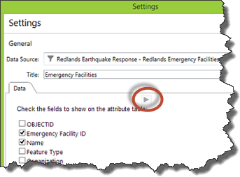
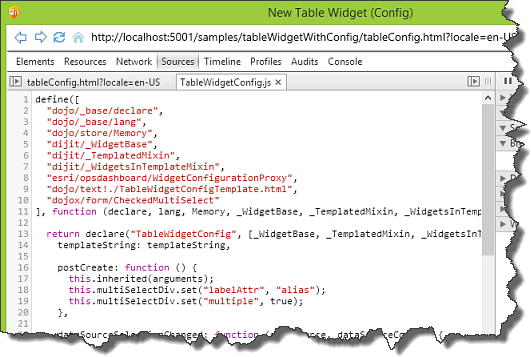
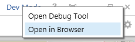

Hide Table of Contents
Hide Table of Contents
 Tutorials
About the API
Work with the API
Graphics and feature layers
Popups and Info Windows
Geoprocessor
Operations Dashboard
Create extensions
Mobile
ArcGIS Server Services
References
What's New archive
Tutorials
About the API
Work with the API
Graphics and feature layers
Popups and Info Windows
Geoprocessor
Operations Dashboard
Create extensions
Mobile
ArcGIS Server Services
References
What's New archive
The basic steps to creating a configurable widget are as follows:
- Create the files for the widget configuration
- Update the manifest
- Create the configuration user interface
- Add programming logic to the configuration
- Update table widget's programming logic
- Update the style
- Debug the extension configuration
In this tutorial, you will learn how to enhance the attribute table widget you built in the Create a widget tutorial by adding some configuration logic to it. You’ll allow the operation view author to choose the fields of a data source, then use a table to show the chosen attribute information for each feature from the data source.
The same concepts in this tutorial can be applied to configure map tool and feature action extensions.
Note: If you didn't complete the Create a widget tutorial, you can download the source code from here to continue this tutorial.

Before you begin, you must set up a development environment for Windows Operations Dashboard and prepare it to run in developer mode.
-
Create configuration files
After completing the Create a widget tutorial, you should have a folder named tableWidget with the following files:
- table.json
- table.html
- tableWidgetTemplate.html
- tableWidget.js
- style.css
- A PNG (or JPG) image file for the widget’s thumbnail.
In the same folder, create the following files:
- tableConfig.html–The user interface (UI) of the widget's configuration that will load into the Data tab of the Settings dialog when configuring the widget within an operation view. It shows a list of checkboxes for each field of the data source to be chosen by an operation view author.
-
tableWidgetConfigTemplate.html–A template or an HTML fragment that will be incorporated into the
tableConfig.html file. This template has a Dojo
CheckedMultiSelectform that will be manifested as checkboxes for the alpha-numeric fields of the selected data source. The business logic of the template is implemented in the tableWidgetConfig.js file. -
tableWidgetConfig.js–A JavaScript file that defines the table widget configuration class that will be
created as a Dojo widget, or a
dijit
(the term "widget" here has no association with the concept of widgets in Operations Dashboard).
This class sets up the data stores for the
CheckedMultiSelectform using the fields of the selected data source, captures the selections from the author, and prepares the selections and other settings to be saved when the author saves the operation view.
Note: You can assign different names to the above files.
-
Update the manifest file
Open the table.json or manifest file in your IDE and add the "path" property to the configuration object to indicate the path to the configuration UI:
"configuration": { "path": " tableConfig.html", "requireDataSource": true }, -
Create the configuration user interface
-
Open the tableConfig.html file and add the following code to set up the basic structure of an HTML5 file.
<!DOCTYPE html> <html> <head lang="en"> <meta charset="UTF-8"> <link rel="stylesheet" type="text/css" href="style.css" /> </head> <body> </body> </html> -
Between the
<body>tags, create adivelement and add a "data-dojo-type" attribute with the value "extension/ TableWidgetConfig".<body> <div data-dojo-type="extension/TableWidgetConfig"></div> </body>This attribute will be used to instantiate an "extension/TableWidgetConfig" object that has the logic of the table configuration dijit you are going to implement.
-
Open the TableWidgetConfigTemplate.html file and add the following HTML fragment to define the UI of the table configuration dijit.
In the CheckedMultiSelect
<div>element, set "multiSelectDiv" as the value for the data-dojo-attach-point property. This "multiSelectDiv" pointer will be used by the TabletWidgetConfig class to communicate with the configuration UI.In addition, define the onSelectionChanged event handler when the selection on the form changes (i.e. when a field checkbox is checked or unchecked).
<div class="table"> <div class="table-row"> <label class="configLabel"> Check the fields to show on the attribute table: </label> </div> <div class="table-row full"> <div data-dojo-type="dojox.form.CheckedMultiSelect" data-dojo-attach-point="multiSelectDiv" data-dojo-attach-event="onChange:onSelectionChanged"></div> </div> </div>
-
Open the tableConfig.html file and add the following code to set up the basic structure of an HTML5 file.
-
Add programming logic to the configuration
-
Open the tableConfig.html file again. Before the closing
<body>tag, add the following<script>block with the dojoConfig object to define the module (i.e. the table configuration dijit) that will load. Set the "async" and "parseOnLoad" properties to true. To learn more about dojoConfig, read the Dojo Toolkit documentation.<script> var dojoConfig = { async: true, parseOnLoad: true, paths: { "extension": location.pathname.replace(/\/[^/]+$/, '') } }; </script>Note: Within the "paths" object, the URI of the extension folder is referenced as "extension". This is used to construct the relative path to the widget configuration dijit (i.e. "extension/TableWidgetConfig") in the dojo-data-type attribute of a
<div>element in this file. -
After the
<script>block from the previous step, add another<script>block referencing the ArcGIS API for JavaScript.You must load the dojoConfig before loading the ArcGIS API for JavaScript, otherwise the dojoConfig will be ignored.
<script src="//js.arcgis.com/3.14/"></script> -
Open the tableWidgetConfig.js file and add the following
definefunction to define the table configuration dijit.In this function, load the dependent modules and pass in a callback function with the modules as parameters.
define([ "dojo/_base/declare", "dojo/_base/lang", "dojo/store/Memory", "dijit/_WidgetBase", "dijit/_TemplatedMixin", "dijit/_WidgetsInTemplateMixin", "esri/opsdashboard/WidgetConfigurationProxy", "dojo/text!./TableWidgetConfigTemplate.html", "dojox/form/CheckedMultiSelect" ], function (declare, lang, Memory, _WidgetBase, _TemplatedMixin, _WidgetsInTemplateMixin, WidgetConfigurationProxy, templateString) { }); -
Declare a class named "TableWidgetConfig".
The second parameter is an array of super classes that are inherited by the TableWidgetConfig class. The third parameter is an object that will contain the methods to be called throughout the lifecycle of the class.
... "dojo/text!./TableWidgetConfigTemplate.html", "dojox/form/CheckedMultiSelect" ], function (declare, lang, Memory, _WidgetBase, _TemplatedMixin, _WidgetsInTemplateMixin, WidgetConfigurationProxy, templateString ) { return declare("TableWidgetConfig", [_WidgetBase, _TemplatedMixin, _WidgetsInTemplateMixin, WidgetConfigurationProxy], { }); }); -
Inside the TableWidgetConfig class, load the TableWidgetConfigTemplate.html file into the templateString as an inline string.
return declare("TableWidgetConfig", [_WidgetBase, _TemplatedMixin, _WidgetsInTemplateMixin, WidgetConfigurationProxy], { templateString: templateString, }); -
Add a
postCreatefunction. Through the "multiSelectDiv" pointer set the "multiple" property of theCheckedMultiSelectform to true so that they will render as checkboxes. Then, set the labels of the checkboxes to be displayed by the alias of the fields.postCreate: function () { this.inherited(arguments); this.multiSelectDiv.set("labelAttr", "alias"); this.multiSelectDiv.set("multiple", true); }, -
After creating the
postCreatefunction, add adataSourceSelectionChangedcallback.It will be called when the table widget is initialized and when the operation view author selects a different data source.
dataSourceSelectionChanged: function (dataSource, dataSourceConfig) { },The callback for this event accounts for two parameters:
dataSourceanddataSourceConfig. ThedataSourceparameter represents the data source chosen by the operation view author. ThedataSourceConfigparameter is an object that stores the fields chosen by the author. If you implement additional properties in your extension, you can also include them in this object.When the author saves the view, the properties of the
dataSourceConfigobject will save with the operation view. As a result, when the operation view is opened again, these properties will feed back into thedataSourceConfigobject. -
In the
dataSourceSelectionChangedcallback, reference thedataSourceConfigusingthis.dataSourceConfig, and get the data source’s alpha-numeric fields. Then create a memory store object with the fields.dataSourceSelectionChanged: function (dataSource, dataSourceConfig) { this.dataSourceConfig = dataSourceConfig; var alphaNumericFields = []; dataSource.fields.forEach(function (field) { switch (field.type) { case "esriFieldTypeString": case "esriFieldTypeSmallInteger": case "esriFieldTypeInteger": case "esriFieldTypeSingle": case "esriFieldTypeDouble": alphaNumericFields.push(field); return; } }); var alphaNumericFieldsStore = new Memory({ idProperty: "name", data: alphaNumericFields }); this.multiSelectDiv.set("store", alphaNumericFieldsStore); }, -
Finally, in the
dataSourceSelectionChangedcallback, add the logic to retrieve the previously selected fields from the dataSourceConfig.selectedFieldsNames property, and use them to check the field boxes.This part of the logic was needed when the operation view was previously configured and some fields were chosen from the table configuration UI.
dataSourceSelectionChanged: function (dataSource, dataSourceConfig) { ..... // Set previous fields saved in config if (Array.isArray(dataSourceConfig.selectedFieldsNames)) this.multiSelectDiv.set("value", dataSourceConfig.selectedFieldsNames); }, -
After creating the
dataSourceSelectionChangedcallback, implement anonSelectionChangedcallback.This callback will be called when a checkbox is checked or unchecked. In this callback, the selected fields will be retrieved through the "value" variable. The alias of these fields will then be saved into the selectedFieldsNames property of this.dataSourceConfig.
At the end of the callback, add the logic to check if there is at least one selected field. If there is, enable the OK button by sending a true flag to the
readyToPersistConfigmethod (readyToPersistConfigis a method inherited from theWidgetConfigurationProxy’s base class).onSelectionChanged: function (value) { if (!this.dataSourceConfig) return; this.dataSourceConfig.selectedFieldsNames = value; this.readyToPersistConfig(Array.isArray(value) && value.length > 0); }Your code for the TableWidgetConfig.js file should look like this:
define([ "dojo/_base/declare", "dojo/_base/lang", "dojo/store/Memory", "dijit/_WidgetBase", "dijit/_TemplatedMixin", "dijit/_WidgetsInTemplateMixin", "esri/opsdashboard/WidgetConfigurationProxy", "dojo/text!./TableWidgetConfigTemplate.html", "dojox/form/CheckedMultiSelect" ], function (declare, lang, Memory, _WidgetBase, _TemplatedMixin, _WidgetsInTemplateMixin, WidgetConfigurationProxy, templateString) { return declare("TableWidgetConfig", [_WidgetBase, _TemplatedMixin, _WidgetsInTemplateMixin, WidgetConfigurationProxy], { templateString: templateString, postCreate: function () { this.inherited(arguments); this.multiSelectDiv.set("labelAttr", "alias"); this.multiSelectDiv.set("multiple", true); }, dataSourceSelectionChanged: function (dataSource, dataSourceConfig) { this.dataSourceConfig = dataSourceConfig; var alphaNumericFields = []; dataSource.fields.forEach(function (field) { switch (field.type) { case "esriFieldTypeString": case "esriFieldTypeSmallInteger": case "esriFieldTypeInteger": case "esriFieldTypeSingle": case "esriFieldTypeDouble": alphaNumericFields.push(field); return; } }); var alphaNumericFieldsStore = new Memory({ idProperty: "name", data: alphaNumericFields }); this.multiSelectDiv.set("store", alphaNumericFieldsStore); // Set previous fields saved in config if (Array.isArray(dataSourceConfig.selectedFieldsNames)) this.multiSelectDiv.set("value", dataSourceConfig.selectedFieldsNames); }, onSelectionChanged: function (value) { if (!this.dataSourceConfig) return; this.dataSourceConfig.selectedFieldsNames = value; this.readyToPersistConfig(Array.isArray(value) && value.length > 0); } }); });
-
Open the tableConfig.html file again. Before the closing
-
Update table widget’s programming logic
-
Open the tableWidget.js file. Inside the
hostReadymethod, using the selected fields from thedataSourceConfigobject, replace the following code block:replace
dataSource.fields.forEach(function (field) { switch (field.type) { case "esriFieldTypeString": case "esriFieldTypeSmallInteger": case "esriFieldTypeInteger": case "esriFieldTypeSingle": case "esriFieldTypeDouble": fieldsToQuery.push(field.name); columns.push({field: field.alias}); return; } });with the code block below:
dataSourceConfig.selectedFieldsNames.forEach(function (field) { columns.push({field: field}); }); -
Similarly, in the same method update the
fieldsToQueryarray so that it will query for the fields from theselectedFieldsNamesproperty saved to thedataSourceConfigobject. Replace the following code block:replace
fieldsToQuery.push(dataSource.objectIdFieldName);with the below code block:
var fieldsToQuery = dataSourceConfig.selectedFieldsNames.slice(); if (fieldsToQuery.indexOf(dataSource.objectIdFieldName) === -1) fieldsToQuery.push(dataSource.objectIdFieldName);
Now, the names of the fields chosen by the operation view author through the table widget’s Settings dialog will be extracted from the
dataSourceConfigobject. These fields will then be queried by the chosen data source and the results will be rendered in the attribute table. -
-
Update the style
-
Open the style.css file. At the top of the file, import the style for the
CheckedMultiSelectform the ArcGIS API for JavaScript.@import "//js.arcgis.com/3.14/dojox/form/resources/CheckedMultiSelect.css"; -
Update the styles for the configuration UI.
.dataSourceInfoLabel { font-weight: bold; margin-bottom: 10px; } .configLabel { margin-bottom: 10px; } .dojoxCheckedMultiSelect, .dojoxCheckedMultiSelectWrapper { height: inherit !important; margin: 0 !important; overflow-y: auto !important; border: none !important; } .dijitInline.dojoxMultiSelectItemLabel, .dijitInline.dijitCheckBox { display: inline; }
Your extension is now ready for testing in Operations Dashboard.
-
-
Debug the extension configuration
- Start Operations Dashboard in developer mode, and sign in to your ArcGIS organization as a publisher or an administrator.
- Create a single-display operation view and select a map. If you create a multi-display operation view,
you can only open it in the Windows app, and you won't be able to debug your extension in the web browser.
Note: To learn more about creating an operation view, see Create an operation view.
-
Click on the Add Widget , the table widget should be listed under the Custom category.
Tip :When an extension is loaded in the developer mode, it will have a red bounding box to help you distinguish it from extensions in production.
-
Double click the table widget to confirm the selection and open its Settings dialog.
The UI under the Data tab originates from the tableConfig.html file. You should see the checkboxes created for the alpha-numeric fields of the currently chosen data source.
-
Click the Debug button at the top of the configuration UI under the Data tab to launch the
Operations Dashboard extension debugger.

Tip: You can also click the Dev Mode text at the upper right corner of the app, then click Open Debug Tool to launch the debugger.
-
Once the debugger is launched, you can start inspecting the UI elements on the tableConfig.html file, or
set break points and step through the business logic in tableWidgetConfig.js, and more.
The URL to the HTML page shown on the debugger starts from localhost:<port number> because the extension is running from a local server.

Tip: If you make a change to the HTML or JS file during debugging, you can click the Refresh button
 at the top left
corner of the debugger to get the update. However, if you make any changes to the manifest, you will need
to save the operation view, then close and reopen it.
at the top left
corner of the debugger to get the update. However, if you make any changes to the manifest, you will need
to save the operation view, then close and reopen it. -
Click OK to create the widget.
If you want to debug your extension using the web browser, follow the steps below.
- Save your operation view.
-
Click Dev Mode in the upper right corner and choose Open in Browser.

The operation view will open in your default browser.
-
Use the built-in debugging tool of your browser to debug your map tool.
Note: Since you are hosting your extension in the local server, you need to keep the Windows app and the local server running.